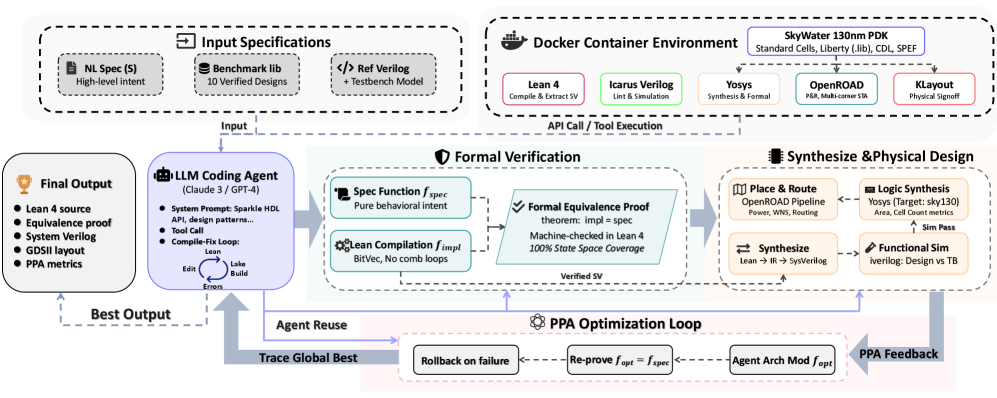

Routes LLM-driven hardware generation through a dependently-typed HDL embedded in Lean 4 with equivalence proofs.
Abstract
LLMs can generate hardware descriptions from natural language specifications, but the resulting Verilog often contains width mismatches, combinational loops, and incomplete case logic that pass syntax checks yet fail in synthesis or silicon. We present CktFormalizer, a framework that redirects LLM-driven hardware generation through a dependently-typed HDL embedded in Lean 4. Lean serves three roles: (i) type checker:dependent types encode bit-width constraints, case coverage, and acyclicity, turning hardware defects into compile-time errors that guide iterative repair; (ii) correctness firewall:compiled designs are structurally free of defects that cause silent backend failures (the baseline loses 20% of correct designs during synthesis and routing; CktFormalizer preserves all of them); (iii) proof assistant:the agent constructs machine-checked equivalence proofs over arbitrary input sequences and parameterized widths, beyond the reach of bounded SMT-based checking. On VerilogEval (156 problems), RTLLM (50 problems), and ResBench (56 problems), CktFormalizer achieves simulation pass rates competitive with direct Verilog generation while delivering substantially higher backend realizability: 95--100% of compiled designs complete the full synthesis, place-and-route, DRC, and LVS flow. A closed-loop PPA optimization stage yields up to 35% area reduction and 30% power reduction through validated architecture exploration, with automated theorem proof ensuring that each optimized variant remains functionally equivalent to its formal specification.
Problem
LLM-generated Verilog often contains width mismatches, combinational loops, and incomplete case logic that pass syntax checks but fail in synthesis or silicon. Existing flows lose about 20% of functionally correct designs during backend synthesis and routing.
Approach
CktFormalizer redirects LLM-driven hardware generation through a dependently-typed HDL embedded in Lean 4. Lean serves as type checker (encoding bit-width constraints, case coverage, and acyclicity as compile-time errors), correctness firewall (ensuring compiled designs are structurally free of defects), and proof assistant (enabling machine-checked equivalence proofs over arbitrary input sequences). A coding agent iteratively writes, compiles, and debugs Lean HDL code, then extracts synthesizable SystemVerilog via metaprogramming.

Figure 2 : Overview of the CktFormalizer pipeline. Given a natural language specification \mathcal{S} and an optional reference Verilog implementation \mathcal{V}_{\text{ref}} , a coding agent \mathcal{A} translates \mathcal{S} into Lean code \mathcal{L} using few-shot examples and iterative error correction. The Lean compiler type-checks \mathcal{L} and extracts synthesizable SystemVerilog \mathc
Results
On VerilogEval (156 problems), RTLLM (50 problems), and ResBench (56 problems), CktFormalizer achieves 95-100% backend realizability (synthesis, place-and-route, DRC, LVS) for compiled designs. A closed-loop PPA optimization stage yields up to 35% area reduction and 30% power reduction with machine-checked functional equivalence.